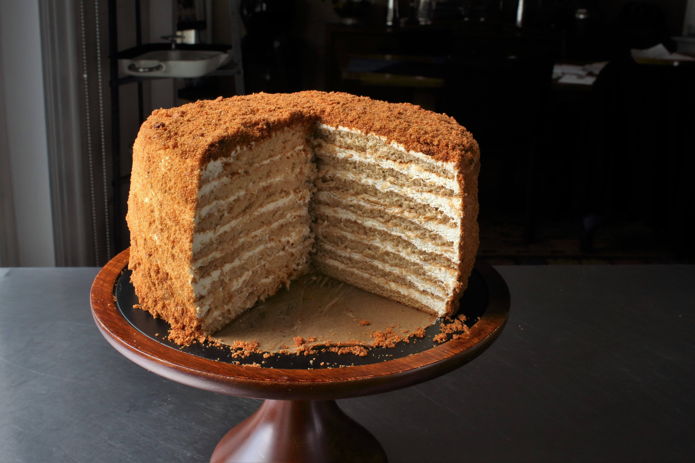

Honey Cake

Description
The key to making this exquisite, gravity-defying cake, which comes from Michelle Polzine of 20th Century Cafe in San Francisco, is patience. This cake takes a lot of time! Set some aside to do it right. There are just two components — airy, lightly spiced cake layers and glossy whipped-cream frosting, both tinged with burned honey — but both require precision. Clear your schedule, and your countertop, to make the time and space to get it right. Then invite a dozen or two of your favorite people over the next day to delight in the impressive results of your hard work. You can buy dulce de leche at most Mexican markets or upscale groceries (look for brands made in Argentina), or make it a day ahead using this recipe.
Ingredients
- 1,5 cups wildflower honey
- 0,25 cup water
- 1 cup + 2 tablespoons sugar
- 6 large eggs
- 2,5 teaspoons baking soda
- 2,5 teaspoons Diamond Crystal Kosher Salt
- 1 teaspoon ground cinnamon
- 3,75 cups all-purpose flour
- 1,25 cups dulce de leche
- 4,75 cups heavy cream chilled and divided
Steps
- Preheat oven to 375. Trace circles around a 9-inch pie or cake pan onto 12 baking-sheet-size pieces of parchment paper. Set aside.
- Make a water bath: Fill a small saucepan with 1 inch of water, and set over medium heat.
- Place 3/4 cup of honey in a 2-quart saucepan, and set over high heat. Bring to a simmer, then reduce the heat to medium. After about 3 minutes, the honey will begin to foam intensely. Stirring occasionally with a wooden spoon, keep a close eye on the honey. Cook until it begins to smoke, then turn off the heat and carefully add water. Allow the honey to sputter until it stops bubbling. Whisk to combine, and pour into a heatproof measuring cup with a spout, then place in prepared water bath to keep honey liquid.
- Fill a medium saucepan with 2 inches of water, and bring to a simmer. Combine 1/4 cup burned honey, 3/4 cup honey, sugar and butter in a large metal mixing bowl, and place over the pot of water.
- Crack eggs into a small bowl, and set aside. Stir together baking soda, 1 1/2 teaspoons kosher salt or 3/4 teaspoon sea salt and cinnamon in a separate small bowl.
- When the butter has melted, whisk the honey mixture to combine. Use your finger to test the temperature of the mixture. When it's warm, add the eggs while whisking. When the mixture returns to the same temperature, add the cinnamon mixture, and continue whisking for another 30 seconds. The batter will begin to foam and emit a curious odor. Remove the bowl from the heat, and allow it to cool until it's warm.
- Place the flour in a fine-mesh sieve, and sift over the batter in three batches, whisking to incorporate the flour completely with each addition. The batter should be completely smooth. The batter will spread more easily when it's warm, so pour half into a small bowl, and cover with plastic wrap. Place in a warm spot, such as atop the preheating oven.
- Place a piece of parchment tracing-side-down on a baking sheet, and spoon in a heaping 1/3 cup of batter. Use an offset spatula to evenly spread the batter to the edges. It will seem like just barely enough batter; do your best to get the layer even and perfectly circular. Repeat with remaining layers until you're out of pans, and then continue with remaining batter and parchment sheets, laying batter circles out on a flat surface. You'll end up with 11 or 12.
- Bake as many layers at a time as possible, for 6 to 7 minutes, until the cake turns a deep caramel color and springs back at the touch. For the first round, set the timer for 4 minutes to rotate pans if needed to ensure even cooking. Check the cakes again at 6 minutes. Do not overbake!
- When each layer is done, slide the parchment off the pan to prevent overbaking. If reusing baking sheets while they are still hot, reduce cooking time to 5 to 6 minutes.
- When the cake layers are cool enough to handle, examine them. If any spread outside the traced circles as they baked, use a sharp knife or pair of scissors to trim them. Before the cakes cool entirely, pull each one carefully from the parchment, then place back on the parchment on a flat surface, and allow to cool completely.
- When all the layers are baked, reduce the oven temperature to 250, and allow the cake to cool for 30 minutes. Return the least attractive layer (or 2, if you got 12) to a baking sheet, and place in the oven to toast until deep reddish brown and dry, about 15 minutes. Allow it to cool, then use a food processor to grind into fine crumbs. Cover and set aside.
- Place 1/2 cup burned honey, dulce de leche and 1 teaspoon Diamond Crystal Kosher Salt or 1/2 teaspoon fine sea salt into a medium bowl. Whisk by hand until combined, then slowly pour in 3/4 cup cream and mix until homogeneous. Chill until completely cooled, about 30 minutes.
- Pour 4 cups heavy cream into the bowl of a stand mixer, and affix whisk attachment. Whip at medium speed to soft peaks, about 6 minutes, then add honey mixture and whip frosting to medium stiff peaks. If your mixer holds less than 5 quarts, make frosting in 2 batches and then combine in a large bowl, or use a large bowl and a hand mixer.
- Assemble the cake on a 10-inch cardboard circle or flat serving plate. Place a cake layer in the center of the cardboard, then spoon a heaping cup of frosting onto the center. Use an offset spatula to spread the frosting evenly, leaving a 1/4-inch ring unfrosted around the edge. Place the next layer atop the frosting, center it and continue as above. Don't be afraid to manhandle the cake to align the layers as you continue stacking. If necessary, make up for any doming in the center by spreading more frosting to the outer half of each layer than the inner half. After you place the 10th layer, spread another scant cup of frosting over the top. Use any leftover frosting to smooth out the sides of the cake, but don't fret if the edges of some cake layers poke through the frosting. Sprinkle the top and sides with cake crumbs.
- Chill overnight. Serve chilled. Cake can be made up to two days in advance. Refrigerate leftovers for up to 3 days.